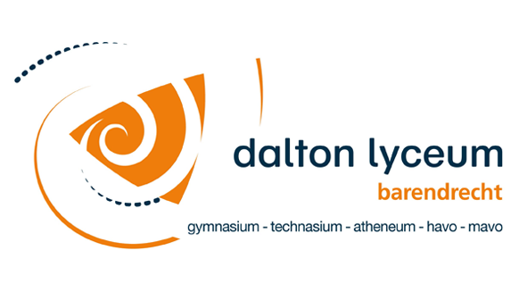

Over
Deze website hebben we gemaakt voor het vak Informatica op het Dalton Lyceum Barendrecht als opdracht om een website te maken over digitale beveiliging.
Hierbij hebben we ook een weektaak gemaakt om het wat duidelijker te maken voor ons zelf.
| Week: | Wat? |
|---|---|
| 45 | Plan van aanpak + ontwerp |
| 46 | Begin website (ongeveer 5 pagina’s) |
| 47 | Afmaken website + inleveren |
| 48 | Beginnen aan CSS |
| 49 | Afmaken CSS + inleveren |
| 50 | Verbeteringen + online zetten website |
